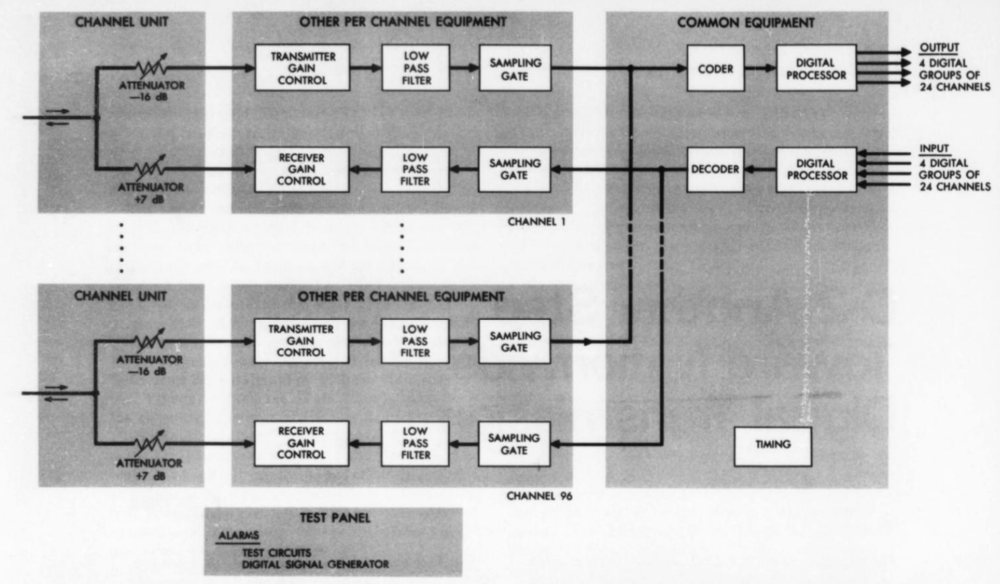
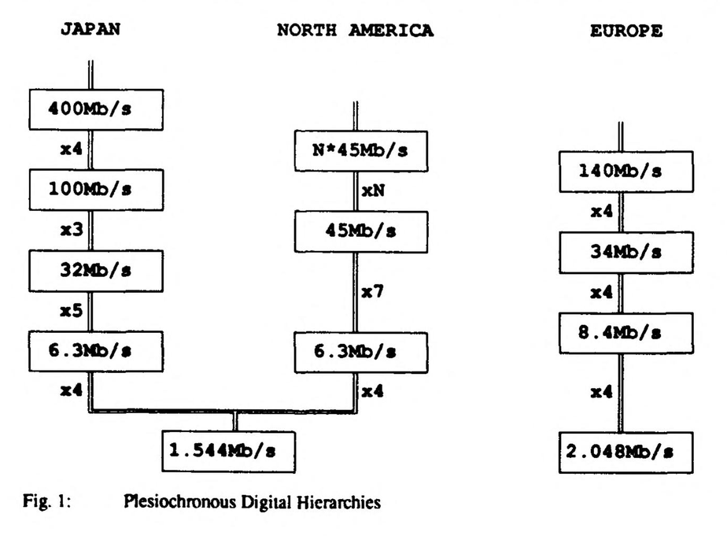
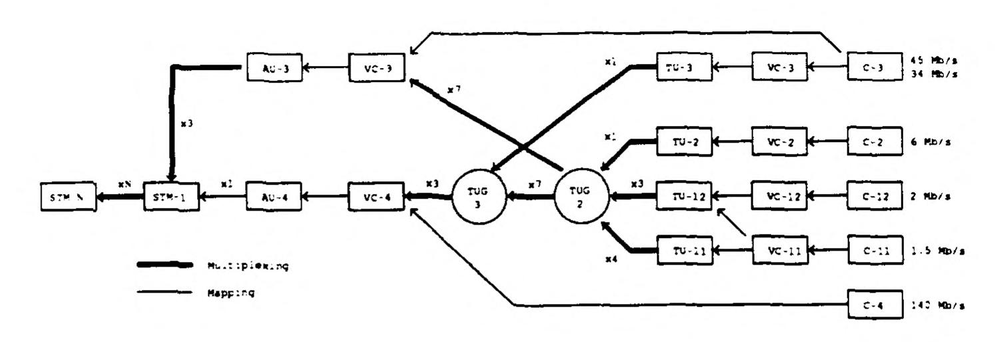

从准同步到同步：数字电话通信网络的世纪演进历程
From Plesiochronous to Synchronous: The Evolution of Digital Telephony
文章背景与核心概要
本文系统梳理了现代通信网络从模拟时代走向全同步数字网络的百年演进之路。文章深入剖析了模拟信号的固有衰减痛点如何倒逼二战密码通信技术催生出脉冲编码调制 (Pulse Code Modulation, PCM) 与 T 载波 (T-carrier) 革命；详细复盘了准同步数字体系 (Plesiochronous Digital Hierarchy, PDH) 在各自分立的独立时钟下，如何利用“比特填充 (bit stuffing) ”与“借位信令 (robbed-bit signaling) ”等精妙而别扭的工程妥协维持运转；最后深度阐释了光纤革命与巨头拆分如何催生出光同步数字网络 (Synchronous Optical Network, SONET) 与同步数字体系 (Synchronous Digital Hierarchy, SDH) ，凭借微秒级的全局统一授时、自愈环网架构以及灵活的分插复用 (Add-Drop Multiplexing, ADM) ，彻底重塑了现代全球通信底座。
内容摘要
Summary
本文追溯了电信技术从模拟系统演进到当今完全同步数字网络的历史轨迹。文章探讨了模拟信号的物理局限性如何推动了数字脉冲编码调制 (Pulse Code Modulation, PCM) 的普及——这一进程始于二战时期的保密语音通信系统 (SIGSALY) ，最终在 1962 年 AT&T 推出 T 载波 (T-carrier) 系统时达到高潮。
This article traces the evolution of telecommunications from analog systems to the fully synchronized digital networks of the modern era. It explores how the limitations of analog signals drove the adoption of digital pulse code modulation (PCM), beginning with WWII-era cryptography (SIGSALY) and culminating in AT&T's introduction of the T-carrier in 1962.
文章详细剖析了准同步数字体系 (Plesiochronous Digital Hierarchy, PDH) 充满妥协与“野蛮生长”的发展历程——着重介绍了为了向下兼容而不得不引入的“比特填充 (bit-stuffing) ”与“借位信令 (robbed-bit signaling) ”等特异机制，并阐明了在相互独立的异构网络间进行时钟对齐、复用以及提取单路信道所面临的巨大挑战。最后，文章探讨了光纤技术的兴起、AT&T 的反垄断拆分以及全球标准化互通的需求，如何共同孕育了光同步数字网络 (Synchronous Optical Network, SONET) 与同步数字体系 (Synchronous Digital Hierarchy, SDH) ，并最终通过高精度授时、自愈环网拓扑以及分插复用技术，彻底取代了昔日粗糙的“大致同步”。
The piece details the messy, organic growth of the Plesiochronous Digital Hierarchy (PDH)—highlighting quirks like bit-stuffing and robbed-bit signaling required for backwards compatibility—and explains the immense challenges of timing, multiplexing, and extracting individual channels across independent networks. Finally, it examines how the arrival of fiber optics, the breakup of AT&T, and the need for standardized global interoperability gave rise to SONET (Synchronous Optical Network) and SDH, ultimately replacing "approximate synchronicity" with precise time-keeping, ring architectures, and add-drop multiplexing.
数字体系的演进
The Digital Hierarchy
在 20 世纪 60 年代以前，电话通话一直是以模拟信号的形式进行传输的。当时网络中大量采用了频分复用 (Frequency Division Multiplexing, FDM) 技术，将信号加载到架空明线以及部分同轴电缆上传输，而在二战后的时期，地下埋设的多对双绞线电缆开始占据统治地位。尽管当时的电话网络功能表现出奇地好——即便是跨越美国东西两岸的长途通话依然相当清晰——但模拟载波存在着无法逾越的物理限制。通话质量在传输链路的每一次中继与放大中都会发生衰减；而对于那些敏感的数据传输连接而言，这种衰减问题显得尤为致命，而数字通信显然正是电话系统的未来方向。当时所谓的“数字通信”，仅仅是将数字信号调制在电话线路顶层：电话系统本身依然将它们视作普通的模拟通话，只是需要对其传输质量予以特殊关照。
Up until the 1960s, telephone calls were carried as analog signals. There was a great deal of frequency division multiplexing onto open wire, and sometimes coaxial cables, but in the post-war period buried multipair telephone cables began to dominate. While the network was surprisingly functional—long distance calls from coast to coast were still quite intelligible—there were fundamental limitations to analog carriers. The quality of the call would degrade with each step, a problem that was much more acute for the sensitive digital connections that were already the apparent future of the telephone system. These were digital signals modulated over the top of telephone lines: the telephone system itself still handled them as analog calls, just ones that required special care for quality.
在第二次世界大战期间，人们逐渐意识到，如果能以数字信号作为整套长途通信系统的底层架构，长途网络面临的诸多棘手难题就能迎刃而解。1943 年，Bell Labs 参与设计了一款名为 SIGSALY 的早期加密语音通信系统。与二战初期使用的“语音扰频器”及其他模拟手段不同，SIGSALY 的工作原理与现代数字加密技术惊人地相似。它将语音数据量化为数值，从而可以使用数字算术逻辑对其进行编码加密。在为语音打造密码系统的探索过程中，Bell Labs 顺带构建了人类首个用于 PCM 数字语音传输的实用系统。战后，对该技术进行改良并推广至常规民用通信服务，自然成为了水到渠成的一步。
During the Second World War, it became apparent that many of the long distance network's challenges could be greatly simplified by using digital signaling as the basis of the entire long distance system. In 1943, Bell Labs contributed to the design of an early encrypted voice communications system called SIGSALY. Unlike the "voice scramblers" and other analog techniques of the early phase of the war, SIGSALY was recognizably similar to modern encryption. The voice data was quantized into numerical values, so that digital arithmetic could be used to encode it. In the quest to build a cryptosystem for voice, Bell Labs incidentally built the first applied system for PCM digital voice transmission. After the war, it was an obvious next step to refine this technology and apply it to regular service.
但这并不意味着电话网络立刻就普及了端到端的纯数字服务，至少起初并非如此：事实上绝大多数用户本地回路 (subscriber loops) 直至今日依然是模拟线路。在数字网络起步的最初几年里，甚至电话局自身的交换机处理的也全都是纯模拟信号。然而在局间中继线上，将模拟信道编码为数字信号彻底解决了诸多痛点，从语音质量劣化、微波链路过载，到流量路由调度的灵活性问题无一不迎刃而解。数字化演进成为了 AT&T 所谓载波 (carrier) 概念的核心组成部分，正如 20 世纪 20 年代频分复用技术的地位一样。这正是 1962 年商用电话系统中首个数字载波体系——T 载波 (T-carrier)问世的历史背景。
This didn't necessarily mean direct digital service, at least not at first: most subscriber loops remain analog to the present day. For the first years of the digital network, even the exchanges themselves switched purely analog signals. Between offices, though, encoding the analog channels into digital ones solved problems from audio quality, to microwave path overloading, to flexibility in traffic routing. Digitization became a core part of AT&T's concept of a carrier, just like frequency division multiplexing had in the 1920s. That's the background to the 1962 introduction of T-carrier, the first digital carrier in the commercial telephone system.
在上一篇关于 T 载波的文章中 (如果你对这个话题感兴趣，强烈推荐阅读！) ，我曾解释过 T1、T2、T3 等是指带宽呈层级递增的物理连接，它们分别负责承载 DS1、DS2、DS3 等不同级别的数字信号 (Digital Signal, DS) 。让我们快速回顾一下这个分层体系概念，顺便再引入一个颇具迷惑性的硬件概念——D1 信道机 (channel bank) 。D1 信道机是一种实体硬件设备，它负责将 24 路模拟语音信道进行数字化采样，并将它们复用成一路 DS1 信号，最终在 T1 载波线路上传输。
Back in the article on T-carrier (which you should read if you are at all interested in this topic!), I explained that T1, T2, T3, etc. are hierarchically larger-bandwidth connections that carry the DS1, DS2, DS3, etc. digital signals respectively. Let's quickly review this hierarchical concept and, just to keep things interesting, add the further confusion of the D1 channel bank. A D1 channel bank is the physical piece of equipment that digitizes 24 voice channels and multiplexes them into a DS1 signal, which will be carried over T1 carrier.
以此类推，4 路 DS1 信号可以复用成 1 路 DS2 信号并在 T2 线路上传输；7 路 DS2 信号可以汇聚成 1 路 DS3 信号并在 T3 线路上传输。依此类推，一直延伸到当时技术所能达到的极限。DS2 级别通常大致对应 D2 信道机，但这种对应关系很容易让人混淆，因为后来研发的信道机不仅扩大了容量，还增添了诸多全新功能。D2 信道机能够将 96 路通话复用到一路 DS2 信号中，但它同时还提升了音频信道的整体质量，以满足通用混合长途业务的技术指标 (最初 D1 信道机仅获批用于常规语音通话，无法满足数据级专线等严苛应用的需求) 。
Similarly, four DS1 signals can be combined into a DS2 signal and carried over T2. Seven DS2 signals can be combined into a single DS3 signal and carried over T3. And so on, at least as far as they were able to get with the technology of the time. The DS2 level maps generally to the D2 channel bank, but that relationship can be confusing as the subsequently developed channel banks added features as well as capacity. The D2 channel bank could multiplex 96 channels onto a DS2 signal, but it also increased the overall quality of the audio channel to meet the technical requirements for general mixed toll service (the D1 had originally only been approved for conventional voice channels, not other applications like data-grade leased lines).
为了实现这一音质飞跃，D2 必须降低混入信号中的量化噪声。早期的 D1 信道机采用的是每个采样点 7 比特的 PCM 音频，而工程理论计算表明，达到长途级通话质量至少需要每个采样点 8 比特 [^1]。从表面上看，这似乎很容易实现：因为 DS1 体系本来就采用了 8 比特的单元。然而，那未被纳入 PCM 音频采样的第 8 个比特，此前一直被预留用于系统信令交互。不过这倒难不倒工程师：由于 D1 信道机原本就用不满全部信令带宽，因此完全可以削减信令速率来达成折中方案。于是，D2 信道机在大多数采样点上采用了满格的 8 比特，但每隔 6 个帧，每个采样的最后 1 个比特就会被“借走”，用于传输信令而非音频。这种做法虽然使量化噪声略有上升，并大幅削减了信令速率，但两者的最终指标都完美落在了工程允许的容差范围内。这是一个绝妙的妥协方案，但在技术美学上却显得极为别扭：从数学意义上看，D2 信道机相当于在每个样本中使用了 7.833 个比特。这确实够让人头皮发麻的。
In order to make that improvement, the D2 had to reduce the amount of quantization noise introduced into the signal. The D1 channel bank had used PCM audio with seven bits per sample, and calculations showed that eight bits per sample would be required for a toll-grade connection [^1]. In a way, that looked easy: DS1 already used 8-bit units. But the eighth bit, not used as part of the PCM sample, was reserved for signaling purposes. No bother: the D1 channel bank hadn't really used the full signaling bandwidth anyway, so it could comfortably be reduced to meet a compromise position. The D2 channel bank used 8 bits for most PCM samples, but every six frames the last bit of each sample was reserved for signaling use rather than audio. This created a slight increase in quantization noise, and a significant decrease in signaling rate, but the resulting numbers for both fell within acceptable margins. A perfect compromise, but one that feels technically inelegant: in a sense, the D2 channel bank used 7.833 bits per sample. Ouch.
这种工程“打补丁”式的设计当年想必也让 Bell System 的工程师们感到浑身难受，但为了向下兼容，牺牲这点设计美感完全是值得的。当 D2 信道机于 1970 年正式投入商用时，网络中已经铺设了海量的 D1 信道机和 T1 线路。向下兼容现有 T1 线路成为了不可动摇的硬性指标。D2 复用了 96 路信道，容量是 D1 的 4 倍，并且可以通过 4 条 T1 链路来承载这 96 路信道——事实上在最初阶段，这也是唯一的部署选项。因为 T2 及其后续更高级别的载波系统直到 D2 投产之后才真正问世。正是这种向下兼容性，不仅为老设备提供了平滑升级路径，还提供了一种将 96 路大容量拆分分流的手段。
This must have given the Bell System's engineers similar discomfort, but the aesthetic offense was worth it for backwards-compatibility. By the time the D2 channel bank was fielded in 1970, there were a huge number of D1 channel banks and T1 connections in service. Backwards-compatibility to existing T1 lines was a firm requirement. The D2 multiplexed 96 channels, four times a D1, and could carry those channels over four T1 links—in fact, initially, this was only the option. T2 and subsequent carriers were not fielded until after the D2. This backwards compatibility provided an upgrade path, as well as a way to subdivide the 96-channel capacity.
你或许已经意识到，这也为我们理解“分层体系”提供了一种截然不同的视角。
You might realize that it is also a completely alternate explanation of the "hierarchy."
你可能会纳闷，为什么这个分层体系中每一层级的复用倍数会如此杂乱无章——24、4、7、6 各不相同？读到上文中每 6 个样本抽取信令比特的设计，或许会唤醒你对“借位信令 (robbed-bit signaling) ”这一概念的深刻记忆——这是一种在 T1 系统中广泛采用的做法，即偶尔“偷窃”几个比特挪作他用。这些都是系统底层设计上的“坏味道”，表明这套体系根本不是预先精心架构出来的，而是如同野草一般野蛮生长出来的。由 T1、T2、T3 等构成的“数字体系”，绝非什么优雅纯粹的设计，至少远没有 T4 时代《Bell Laboratories Record》期刊吹捧得那么天衣无缝。正如 Dn 系列信道机的发展史所揭示的那样，这主要是历史偶然与现实妥协的产物：每一代全新的信道机 (如 D3、D4) 都被要求承载远多于前代的信道数量，同时还必须死死保证与老款信道机和旧载波线路的向下兼容。正是这种在背负沉重历史包袱下的指数级扩容演进，最终顺理成章地催生出了这套数字体系，它纯粹是现实妥协结出的自然果实，而非蓝图规划的既定杰作。
You might wonder why the multipliers at the levels of the hierarchy are so inconsistent—24, 4, 7, 6. Reading the thing about signaling bits in every six samples above might have stirred deep memories of a concept called "robbed-bit signaling," a general concept of stealing occasional bits for other purposes that was widely used with T1. These are all smells, indications that a system was not architected, but grown. The "digital hierarchy" of T1, T2, T3, etc. is not some elegantly-designed system, at least not nearly as much as T4-era Bell Laboratories Record articles like to make it sound. It's mostly a result of happenstance, as the history of the Dn channel banks shows: each new channel bank, the D3, the D4, was designed to carry many more channels than those before. They were also required to be backwards-compatible with the use of the older channel banks and carriers. This process of exponential improvement with backwards compatibility led to the digital hierarchy as a natural consequence, not as a designed outcome.
准同步性：戴着镣铐起舞的时钟对齐之术
Plesiochronicity
这种不断涌现的、由更大多路复用器 (multiplexer, mux) 逐层堆叠的概念解释了数字体系的由来，但现在我们必须面对一个核心难题：定时 (timing) 与同步 (synchronization) 。
This emergent concept of layers of successively larger muxes explains the digital hierarchy, but we now need to consider the problem of timing and synchronization.
在任何基于数字采样的系统中，若想将多路信号合并在一起，你必须精准掌握每个采样点的采集时间。设想这样一个场景：几通并发的电话需要被合并进同一个数字复用流中进行传输。当电话信号到达 D1 (或 D2、D3 等) 信道机时，信道机会在适当时刻对所有输入信号进行采样，从而构建出 DS1 (或更高级别) 的输出数据流。这种情况本身并没有什么特别复杂的，唯独有一个刚性要求：汇入该数字流的所有通话采样，必须全部受控于同一个时钟源。
In any system based on digital sampling, you have to be aware at the point at which those samples are taken in order to combine multiple signals. Consider the scenario where several simultaneous phone calls are being combined into a single digital mux for transmission. When the phone calls reach a D1 (or D2, D3, etc) channel bank, it samples all of the inputs at an appropriate time to build its DS1 (or higher) output stream. Nothing about this case is particularly complicated, except that it does require that all of the calls involved in the digital stream are sampled under the control of the same clock.
但是，如果各路电话线路必须在不同的地理位置分别进行数字化，情况又会如何呢？假设某座城市里有两座较小的端局 (local offices) ，需要将局间通话流量输送给邻近城市的中继汇接局 (tandem switch) 。一种显而易见的方法是：在各自的端局先将通话数字化，然后作为数字信号传输到其中一座端局 (比如市中心的枢纽局) ，再将所有这些数字信号合并在一起发往汇接局。但在当年，用现成的信道机来做这件事是非常糟糕的：你实际上必须先把这些通话重新解码变回模拟信号，然后再重新编码采样变回数字信号，才能将它们从第一段数字链路中继到第二段数字链路。最早期的数字电话线路就是这种形态：完全是点对点的，根本无法在纯数字层面进行交换或路由。在早期所有交换机本身都是模拟设备、数字链路仅仅用于提高局间线路利用率时，这还不算什么大问题；但它却彻底阻碍了 Bell Labs 构想的纯全数字网络的建设。
But what about cases where lines need to be digitized in different locations? Say you have two smaller offices in a city, that need to deliver inter-office traffic to a tandem in the next city over. An obvious approach would be to digitize the calls in each of their local offices, send them as digital signals to one of the offices (perhaps the city's main downtown exchange), and then combine all of those digital signals together to be sent to the tandem switch. Doing this with channel banks wasn't very desirable: you would actually need to convert the calls back to analog, and then back to digital, in order to relay them from the first digital leg to the second. The first digital telephone leads were like this: completely point-to-point, without the possibility of switching or routing in the digital realm. That wasn't so big of a limitation early on when all of the switches were analog and digital leads just made the lines between them denser, but it prevented the construction of the fully digital network that Bell Labs envisioned.
行业显然急需一种新型复用器：它可以直接接收已经成型的 4 路 DS1 信号，并将它们直接合并为 1 路 DS2 信号。如果更高级别也能照此办理，就能搭建起一套根据各端局流量需求灵活汇聚和分流业务的基础体系。但如此一来，各路采样的时钟定时问题该如何解决呢？
What was clearly needed was some sort of mux that could take four DS1s, already in that form, and combine them into a DS2. Repeat this for the higher levels as well, and you have the basis of a system that can combine and separate traffic as needed to meet the level of demand between various offices. But what about the sample timing?
在 20 世纪 70 年代，如果你手头有来自 4 个不同物理地点的 DS1 数据流，它们之间是绝不可能天然同步的。这 4 台 D1 信道机各自运行在自己的独立采样时钟上；由于现实物理世界晶振器件的不完美，这些时钟彼此间不可避免地会出现微小的走快或走慢。当这 4 路 DS1 流抵达预想中的复用器时，它们不仅存在相位偏差 (out of phase) ，而且实际传输速率也存在细微差异。
If you have four DS1 streams from four different places, at least back in the 1970s, they are not going to be synchronized. The four D1 channel banks would each be operating on their own sample clocks, and because of the imperfection of the physical world some of these clocks would run slightly faster or slower than others. When our four DS1 streams arrived at our notional multiplexer, the four streams would be not only out of phase, they would actually run at slightly different speeds.
从现代工程视角来看，我们能想出许多解决这一难题的方案，最典型的莫过于在内存中开辟较大的缓冲区暂存采样数据块，然后再统一从缓冲区打出。然而在 70 年代，事情远非如此简单：首先，相比于当时的传输比特率，内存昂贵且速度缓慢；其次，此前全模拟网络中的信号传播延迟仅仅受限于光速，而在网络中进行大量缓冲所引入的延迟，在当时的电话网标准下是根本无法接受的。
We can imagine a lot of modern solutions to this problem, probably by buffering relatively large blocks of samples in memory and then transmitting out of that buffer. In the '70s, things weren't so simple: first, memory was expensive and slow compared to the bitrates involved, and second, the latency involved in such extensive buffering was not considered acceptable in a network that had previously been all-analog and thus had no more latency than that implied by the speed of light.
针对这一时钟同步难题诞生的解决方案——准同步数字体系 (PDH) ，从我们当下的视角来看并不容易被理解。许多网络与通信教材虽然都会提及 PDH，但往往一笔带过、浮于表面，读完总给人一种说不清道不明的别扭感。PDH 之所以让人感到疏离，原因有二：首先，它是为了解决一系列由于更广泛的技术进步而早已不复存在的历史痛点；其次，即便放在当时的约束条件下，它也早已被更先进的技术彻底淘汰。放在今天，绝不会有任何工程师会设计出 PDH 这样的架构。回顾历史，最好将它视为一次工程上的“黑客式临时拼凑 (hack) ”。可以说，PDH 是一项过渡时期的权宜之策，它在数字信道机的诞生与后来真正成熟优秀的数字网络同步技术之间架起了一座桥梁。
The solution to this problem, the Plesiochronous Digital Hierarchy or PDH, is not easy to understand from our contemporary perspective. Many textbooks on networking and communications make some nod to PDH, but it's often short and cursory, and leaves you with a nagging feeling that the whole thing doesn't make much sense. PDH is hard to relate to for two reasons: first, it was developed to solve a set of problems that (due to broader technical advancements) we no longer have. Second, even within those constraints, it is a solution that has been obsoleted by newer approaches. PDH is not something that anyone would design today, and in retrospect, it's probably best to think of it as a hack. PDH was an interim measure, if you will, that bridged a gap between the development of digital channel banks and the later development of a good approach to synchronizing a digital network.
如果当年信道机和同步网络能够同步设计，事情自然会理想得多，但在现实中并非如此：在 AT&T 拿出一套合理的数字网络架构之前整整十年，数字长途线路就已经被普遍使用了。你可以看到，早在 20 世纪 60 年代末，他们就已经在思考这些需求，并萌生出了将 PDH 作为分层网络架构的概念；但构建该网络所需的大部分核心技术，直到 70 年代和 80 年代才真正被研发出来。在很长一段时间里，通信网里运行的仅仅是“勉强能用”的东西——一个用工程绝缘胶布糊上去的临时补丁，一套概念层面上绑着铁丝网勉力维持的权宜产物。
It would have been more convenient if those two systems had been designed at the same time, but in practice, they weren't: digital long distance lines were in common use a solid decade before AT&T had a reasonable architecture for a digital network. You can already see that they were thinking through these requirements in the late 1960s, leading to the concept of the PDH as a hierarchical network architecture, but most of the actual technology to provide that network was built later, in the '70s and '80s. For a while, there was just, you know, something that worked. A duct tape fix. Conceptual bailing wire.

那么，究竟什么是 PDH？我们不妨先从定义“plesiochronous (准同步) ”这个词开始，每本教科书都绕不开它，因为这个词正是 Bell Labs 为了描述其设计而生造出来的。这里就不考究词根了，但它的含义就是“几乎同步”或“大致同步”。这正是 PDH 的本质：它是一套留有松动余量的同步数字系统，预留了一丁点儿容差游隙。
So what even was the PDH? It is helpful to start by defining the word "plesiochronous," which every textbook has to do since the term was invented by Bell Labs to describe their design. I will spare the roots, but plesiochronous means "almost synchronized" or "approximately synchronized." And that's what the PDH was: it was a synchronous digital system with some slop. There was a little wiggle room.
一路 DS1 信号的速率是 1.544 Mbps，如果将 4 路 DS1 信号复用在一起，你直觉上可能会认为输出速率是 6.176 Mbps。但你猜错了：一路 DS2 的实际速率是 6.312 Mbps。这里多出来的额外开销，恰恰来自于准同步 (plesiochronous) 里的这个“准 (plesio) ”字。要理解它的工作机制，我们需要从头审视复用器的设计。按照 AT&T 的命名习惯，将 DS1 级别复用到 DS2 级别的设备被称为 M12 (顾名思义，即从 1 到 2 的 Multiplexer) 。而在实际工程部署中，M13 型设备似乎更为普遍，其内部通常实现为 7 台 M12 输出汇入 1 台 M23。
A DS1 signal is 1.544 Mbps, so if you multiplex four of them, you might expect 6.176 Mbps. You would be wrong: a DS2 is actually 6.312 Mbps. The overhead here comes from the plesio part of plesiochronous. To understand how that works, we should look at the design of the multiplexer from the beginning. AT&T practice would call a multiplexer from the DS1 level to the DS2 level an M12, for, well, multiplexer from 1 to 2. In practice M13s seem to have been more common equipment, which were often implemented internally as seven M12s feeding one M23.
无论如何，M12 接收 4 路不同的 DS1 数据流，然后将它们按比特位交织 (bit-interleave) 在一起，使得输出流中的每隔第 4 个比特位依次对应其中一个输入信道的下一个比特。这种机制逻辑清晰，最大的优势在于硬件中几乎完全不需要缓冲。但问题来了：如果其中一个输入流跑得稍快，而另一个输入流跑得稍慢，该怎么办？首先要明确的是，复用器的输出总流速率在设计上被故意调得比所有输入流的速率总和还要稍快一点。一套典型的 PDH 系统允许各路输入的速率有 \(\pm 50\text{ PPM}\) (百万分之五十) 的波动误差，这意味着输出总速率必须相对于所有输入之和快上至少 50 PPM。通过这种超频设计，复用器就永远不会因为某个输入流喷射比特的速度过快而发生“赶不上、来不及交织”的积压故障。
In any case, the M12 takes in four different DS1 streams and then bit-interleaves them, such that every 4th bit of the output is the next bit from one of the inputs. This is simple to reason about and has the advantage that virtually no buffering ever happens. But what if one of the inputs is running slightly fast, and another slightly slow? The first thing to know is that the output stream is intentionally slightly faster than all of the inputs. A typical PDH system allowed a 50 PPM plus or minus variation in the rate of the inputs, which means that the output had to be at least 50 PPM fast relative to the sum of the inputs. That way, the multiplexer will never "fall behind" because an input is providing bits faster than the output can interleave them.
另一个核心要点是，复用器必须执行一项被称为填充 (stuffing) 或码速调整 (justification) 的功能。据说 AT&T 内部引入“justification”这个词是因为它听起来更具学术专业范儿，而一线工程师则更喜欢直截了当的“stuffing (塞比特) ”。每个外发帧的特定位置在标准中被定义为“可填充位”，有时也被称作“间隙 (gaps) ”。在这些位置上，复用器既被允许填入有效数据，也被允许塞入被称为填充比特 (stuffing bits) * (或者更专业地称为调整比特 (justification bits) *) 的无意义伪数据。通过决定是在间隙中填入真实数据还是塞入填充比特，复用器实际上能够灵活地上下微调“真实”输出数据速率。如此一来，尽管各路输入的实际速度会因“时钟噪声”而出现微幅忽快忽慢，总输出却能在动态微调中精准收敛到正确的平均值 (即所有输入的实际总和) 。
The other thing to know is that the multiplexer must perform a function known as either stuffing or justification. It is said that the term justification was introduced within AT&T because it sounded more technical, while stuffing was more popular with the actual engineers. Certain parts of each outgoing frame are defined (by standard) as stuffable, and they're sometimes called gaps. These are sections where the multiplexer is allowed to either include real data, or to include some nonsense data called stuffing bits (or, if you want to sound more technical, justification bits). By choosing to either include real data or stuffing in the gaps, the multiplexer can actually adjust the "real" output data rate up or down. That way, it converges onto the correct average (the sum of the inputs) despite the "timing noise" of the inputs varying slightly up and down in real speed.
如果你觉得上述解释有些抽象，不妨换个角度来理解：我们可以把 DS2 输出帧想象成由 4 个“卡槽”组成，4 路 DS1 输入帧分别塞入其中 (虽然在微观上它们是按比特逐位交叉交织的，并不那么直观，但在宏观数学逻辑上完全等价) 。在 PDH 设计下，这些卡槽在尺寸上全部被设计得略宽于输入帧，从而留出了“充裕空间”，允许输入帧向左向右微移或被适当拉长。这使得复用器既能通过快速吐出追平跑快了的输入，也能通过留白拉伸平抑跑慢了的输入。将这一机制理解为一个可随心所欲放置输入的宽槽，也能让我们更好地领会“justification (两端对齐/码速调整) ”一词的精妙之处：你可以左右挪动比特，或者在它们之间填塞额外空隙，就像排版软件对齐文本一样。
If that didn't make sense to you, here's a different way to think about the same thing: we can imagine the DS2 output frame as consisting of four "slots" into which the four DS1 input frames are inserted (this isn't quite intuitive because they are interleaved bit-by-bit, but the math works out the same). Under the PDH design, these slots are all slightly wider than the input frames, so that there is "free space" for the input frames to be shifted a bit in either direction or stretched out. That allows the multiplexer to "catch up" on a fast input or to "draw out" the frames from a slow input. Thinking about it in terms of a wide slot that you can place the input into as desired also gives more value to the term "justification:" you can shift bits around, or add extra space in between them, just like you would to justify text.
这一构想在工程落地时相当复杂，因为链路另一端的解复用器必须准确知道究竟哪些比特是填充进去的无用位，以便将它们剔除扔掉。正因如此，PDH 在帧结构的固定位置预先规定了间隙：控制信令中包含了一组指示标志 (flags) ，专门用于标明这些固定间隙到底是被填入了真实数据还是填充比特。当复用器根据输入流是否跑在输出前面来决定是否动用可填充位时，它还必须把这个决策暂存到帧末尾，以确保控制标志能够被准确设置。
The actual implementation of this idea is pretty complicated, because the demultiplexer on the other end needs to know which bits were stuffed so that they can be discarded. That's why PDH specified gaps at fixed positions: the control signaling included a set of flags that indicated whether the fixed gaps were used for data or stuffing. When the multiplexer decided whether or not to use a stuffable bit (based on whether or not the input was getting ahead of the output mux), it also had to store that decision for the end of the frame so that the flag could be set correctly.
PDH 称不上是一套优雅的方案，但它确实解决了现实问题；基于 PDH 路线，工程师们一路设计出了高达 DS4 级别的复用器。我们理应向 PDH 致以崇高敬意，正是这个笨重粗糙的权宜之计，支撑起了覆盖全美的早期数字化电话网络。但话虽如此，它的致命缺陷也同样不可小觑。
PDH wasn't an elegant solution, but it was a solution, and multiplexers were designed up to the DS4 level based on the PDH approach. We all owe PDH a huge thanks for providing the clunky stopgap that allowed the construction of a nationwide digital telephone network. That said, well, it had quite a few downsides.
首先，PDH 在标准化方面一直非常欠缺。今天去考证研究 PDH 相当棘手，因为几乎没有多少文献能详尽记录它在美国本土的实际工程实现，大多只有概要介绍、概念示意图以及来自欧洲的案例。据我所知 [^2]，Western Electric 甚至从未真正推出过一款独立的商用 PDH 复用器。Western Electric 的大型集成系统 (比如微波载波设备机架) 中可能会内置 PDH 复用模块，但我甚至无法确定 Western Electric 本身是否真的生产过它们——我能找到的 PDH 复用器广告和报价单全部来自其他第三方厂商，比如 Farinon 和 NEC。
First, PDH was never all that well standardized. Researching PDH is tricky because there aren't a lot of documents that provide conclusive detail about the actual implementation in the US, mostly just summaries, conceptual sketches, and examples from Europe. As far as I can tell [^2], Western Electric never really offered a standalone PDH multiplexer. Larger integrated systems from Western Electric (like, say, a microwave carrier equipment bay) might include a PDH multiplexer, but it's not clear to me if WE even made them—the advertisements and pricing information I can find for PDH multiplexers are from other vendors like Farinon and NEC.
在北美的工程实践中，PDH 似乎从未形成过坚固统一的工业标准，不同厂商的设备之间存在着各种实现层面的差异。这大概也是 PDH 设备文献如此匮乏的原因之一：电信局通常不会单独购买一台独立的 PDH 复用器，而是将其作为大型专用系统的一部分来指定特定型号。这意味着 PDH 网络的实际灵活性远远达不到 AT&T 最初的设想。
In North American practice, it doesn't seem like PDH was ever robustly standardized, and there were implementation differences between equipment from different manufacturers. That's probably one of the reasons for the scarcity of information on PDH equipment: you wouldn't usually buy a single PDH multiplexer, but instead would specify a specific model as part of a larger system. That meant that the PDH network was far less flexible than AT&T had hoped.
如果把视线转向海外，混乱的情况就更严重了：AT&T 的作风往往是先由 Bell Labs 和 Western Electric 把最新成果火速投产，事后再将其强行推举为标准。而欧洲的电信运营商往往要等到美国的技术成熟后才予以跟进，这反而让他们有机会在硬件设备铺设之前从容制定出统一的标准规范。因此，许多通信技术的欧洲版本往往比美国原版设计得更为严谨合理，PDH 也不例外。事实上，美国、欧洲和日本在 PDH 信令上采用了 3 种完全不同的体系结构。欧洲标准在每个数据流中塞入了更多信道 (约 2 Mbps 的“E1”) ，并且在每个层级之间严格采用了整齐划一的 4 倍复用率。欧洲的 PDH 实践甚至获得了国际电报电话咨询委员会 (CCITT) 的完整正式标准背书。而日本系统虽然采用了与美国相同的 DS1 基准，但其每一级的复用倍数却大相径庭 (为 4、5、3、4，而不是美国的 4、7、6) 。因此，在没有把全部信号彻底拆解重新复用之前，各国的 PDH 系统根本无法直接用于国际长途通话。
The problem was even bigger when you looked overseas: AT&T tended to field the best thing that Bell Labs and Western Electric could come up with, and then promulgate that as a standard later on. The European telcos tended not to adopt new American developments until they were mature, giving them the opportunity to make standards before any equipment was in place. Thus the European versions of US telephone carriers are often a bit better, and PDH is no exception. In fact, the US, Europe, and Japan used three different hierarchies for PDH signaling. The European standard put more channels into a stream (the "E1" at about 2 Mbps), and used a consistent multiplier of 4 for each level. European PDH practices even got a complete published standard from CCITT. The Japanese system used the same DS1 standard as the US but with different multipliers (4, 5, 3, 4 instead of 4, 7, 6). PDH could thus not be used for international calling without completely remuxing everything.
PDH 的另一个严重短板同样与这种“重新复用”有关。由于采用了将各输入帧按比特逐位交叉交织、动态塞入填充比特、并在交织流中插入比特填充标志位的设计，导致 PDH 复用器实际上将各路输入数据流彻底打乱“揉成了浆糊”。假设你手里有一路 DS3 高速数据流，想从中精准提取出一路单独的语音信道，摆在你面前的将是一场工程噩梦。以当年的电子技术水平，想直接在线解析出每一级的交织规律和填充位是根本做不到的。你唯一的办法，就是将这路 DS3 数据流一层一层地经过多台解复用器逐级拆解，一直拆到数字体系的最底层，取出你想要的那路信道，然后再一层一层重新复用封装回去。从一路 DS3 中单独掏出一路信道，甚至可能需要占用两台高达 11.5 英尺 (约 3.5 米) 的庞大设备机柜；而且受制于借位信令机制，这一来一回的拆解与重构还会进一步恶化量化噪声。
Another shortcoming of PDH had to do with that remuxing. The decision to bit-interleave the input frames together, stuff some bits, and then put flags on the bit stuffing into the interleaved stream, meant that a PDH multiplexer effectively "scrambled" the input streams. If you had, say, a DS3 stream and wanted to extract a single voice channel from it, you had a lot of work in front of you. It simply wasn't feasible with the electronics of the era to analyze the stream to determine the interleaving and stuffing bits at each level. Instead, you would have to put the DS3 through demuxers all the way back down to the bottom of the hierarchy, pull out the channel you wanted, and then remux it all the way back up. Pulling a single channel out of a DS3 could require two 11.5 foot tall equipment bays, and even further quantization noise due to the nature of the robbed bit scheme.
后来发生的两件大事将 PDH 推向了极限：首先是光纤技术的到来。众所周知，AT&T 在光纤技术的接纳上显得相当保守迟钝；70 年代关于数字体系的官方文献中，通篇都在讨论如何通过 T 载波、微波和同轴电缆来进行传输。我们之前曾探讨过同轴电缆，但当时的 L 载波是一套纯模拟系统。虽然数字同轴电缆后来也演进出了 T3、T4 和 T5 等载波，但它们的传输距离相对较短，主要仅用于局间较近距离的短途互联。
Two things happened that pushed PDH to its limit: first, fiber optics. AT&T was famously a late adopter of fiber, and 1970s documents on the digital hierarchy talked about conveying it over T-carrier, microwave, and coaxial. We have talked about coaxial before, but L-carrier was an analog system. Digital coaxial did emerge as the T3, T4, and T5 carriers, but these were relatively short range and mostly only saw use on shorter inter-office links.

然而，时代的大潮正在迅速转向：当 DS3 设备开始在电话局崭露头角时，各路竞争对手已经在积极评估光纤通信的可行性了。AT&T 于 1976 年开始涉足该领域，在亚特兰大铺设了一条实验性的 DS3 光纤链路。次年，AT&T 与竞争对手 GTE 双双将 DS3 光纤线路投入商用 (分别位于芝加哥和洛杉矶地区) 。外部设备厂商大约在 1980 年开始推销“T1-over-fiber (光纤承载 T1) ”设备；到了 1983 年，AT&T 已经建成了一条从纽约延伸至华盛顿的多模光纤通信系统。撇开商业与竞争博弈那些引人入胜的内幕不谈，大局已然昭然若揭：光纤必将主宰长途骨干网的未来。AT&T 的工程师们清醒地认识到，PDH 的架构根本无法平滑扩展以适配光纤所能带来的惊人带宽容量；更致命的是，复杂的光纤网络急需一种 PDH 完全不具备的核心能力——直接从复用总流中随意分插单一信道。此外，尽管当时市面上已有各种光纤系统在运行，但业内压根就不存在一套关于如何在光纤上传输 PDH 信号的统一标准，这只会导致更加严重的软硬件兼容性噩梦。
Things were changing, though: by the time DS3 equipment was appearing in telephone exchanges, competitors were already evaluating fiber optics. AT&T dipped their toe in the water in 1976, with an experimental DS3 fiber optic link in Atlanta. The next year, both AT&T and competitor GTE had DS3 fiber lines in service (in Chicago and the LA area, respectively). Outside manufacturers started offering T1-over-fiber equipment around 1980, and in 1983 AT&T had a multimode fiber system stretching from New York to Washington. Sparing the (fascinating) story of the business and competitive factors, the writing was on the wall: fiber was the future of long lines. AT&T engineers realized that the PDH design did not scale well to the enormous capacities that fiber could reach, and even worse, that complex fiber networks would require exactly the capability that PDH lacked: extracting single channels from the mux. Besides, despite the systems in use, there really wasn't any standard for conveying PDH signals over fiber, which only meant more compatibility issues.
而在 1983 年，另一场撼动行业格局的巨变已然降临：反垄断拆分 (divestiture) 。20 世纪 80 年代中期 AT&T 的彻底重组，将原有的 Bell 贝尔帝国肢解为多家独立的“贝尔小宝宝 (Baby Bells) ”公司，这使得 PDH 的互操作性缺陷变得雪上加霜。各家贝尔运营公司 (BOCs) 不仅需要与 AT&T 长途业务部门无缝交换流量，而且随着时间推移，还必须与其他 BOCs、竞争性新兴电话公司以及各类长途运营商进行跨网互联。当这些跨网流量绝大部分被封装在缺乏标准规范的“黑盒”复用器中时，这种跨网互通变得困难重重。在 Bell System 拆分之前，美国电话网络的许多技术规范之所以标准化程度松散，是因为 AT&T 独家掌控着整个网络，根本无需向任何外部厂商妥协协作。然而在 1984 年之后，美国电信市场的格局变得更像欧洲：一项技术若想被全行业广泛采纳，就必须具备定义清晰、公开发布的正式标准。
Something else was coming over the horizon in 1983: divestiture. The complete reorganization of AT&T in the mid-1980s, breaking the Baby Bells up into independent companies, made the interoperability problems with PDH much more severe. Bell operating companies (BOCs) would need to easily exchange traffic with both AT&T Long Lines and, eventually, with other BOCs and competitive phone companies and long distance carriers. That was very difficult when that traffic was mostly conveyed in loosely-standardized black-box muxes. Many aspects of US telephony were loosely standardized prior to the Bell System breakup because AT&T ran the entire network and didn't really need to cooperate with others. After 1984, the US became a lot more like Europe: for technology to be widely adopted, it would need to have a well-defined, published standard.
这意味着行业必须设立中立的标准组织——原本隶属于 AT&T、负责向所有 BOCs 发布技术规范的部门，在拆分后独立重组为一家名为 Bellcore 的公司。Bellcore 成立后的当务之急，就是制定一套用于各大电话公司之间跨网互通的全套标准化数字接口。与此同时，一批电信运营商与设备制造商联合组建了行业联盟，启动了美国国家标准学会 (ANSI) 旗下针对光纤设备的标准化进程。他们的目标是制定一套高速数字光纤通信的通用工业标准，从而让不同厂商生产的终端设备能够顺畅混用、无缝互通。
That meant a standards body—the part of AT&T that had formerly published the practices used by all of the BOCs, after divestiture, became an independent company called Bellcore. Bellcore had an immediate goal of developing a fully standardized set of digital interfaces to be used between telephone companies. At the same time, a group of carriers and equipment manufacturers organized an association to start an ANSI standards process for fiber-optic equipment. They had a goal of an industry standard for high-speed digital fiber optics, so that terminal equipment from different manufacturers could be used together.
这一努力最终促成了 ANSI T1X1 工作组的成立，其全称为“数字体系与同步工作组”。1985 年，Bellcore 正式向 T1X1 委员会提交了他们起草的标准草案：他们将其命名为 SONET。
That effort formed the ANSI T1X1 working group, titled Digital Hierarchy and Synchronization. In 1985, Bellcore proposed their draft standard to the T1X1 committee: they called it SONET.
同步性：光纤时代的全局统一授时革命
Synchronicity
首先，我想为全球读者简要说明一下背景。PDH 当年的重大缺陷之一就是缺乏国际标准化，而 SONET 绝不会重蹈覆辙。在 SONET 被提交给 ANSI 后不久，它也被同步提交给了 CCITT。出于历史渊源，尽管两者在绝大多数机制上几乎完全一致，但光同步数字网络 (Synchronous Optical Network, SONET) 属于北美标准，而欧洲及国际标准则被称为同步数字体系 (Synchronous Digital Hierarchy, SDH) 。在下文中我将主要沿用 SONET 这一术语，因为它读起来更朗朗上口；但平心而论，“SDH”这个名字能更好地传达出其本质内涵——它与 PDH 怀揣着完全相同的构建理念，区别仅在于它真正实现了全网时钟的严格同步。不仅如此，它在功能特性上也更加强大完备，标准化程度更是不可同日而语。
First, I will briefly explain some context for my global readers. One of the shortcomings of PDH was its lack of international standardization, and SONET would not make the same mistake. Shortly after SONET was proposed to ANSI, it was also proposed to CCITT. For historic reasons, and despite the fact that they are largely identical, SONET (Synchronous Optical Network) is a North American standard while the European standard is called SDH, for Synchronous Digital Hierarchy. I will stick to the term SONET because it is catchier, but the name SDH better conveys that SONET is essentially the same idea as PDH but it's actually synchronous. Beyond that, it is also more feature-rich and much better standardized.
SONET 从一开始就站在了数字体系更高的起点上。SONET 的“最低”层级是同步传输信号 1 级 (Synchronous Transport Signal 1, STS-1) ，它通常由 1 级光载波 (Optical Carrier 1, OC-1) 负责物理承载。OC-1 的工作速率高达 51.84 Mbps，足以轻松打包承载一路包含信令开销的 PDH DS3 信道。在电信发展史行进到这一阶段时，信道机技术已大幅飞跃，50 Mbps 的速率已不再像往昔那般难以企及，因此 DS3 成为了大容量传输系统基础单元的绝佳之选。这也带来了至关重要的向下兼容优势：DS3 是当时部署最为广泛的 PDH 信号，通过将 DS3 完美封装进 STS-1 的载荷中，SONET 为用全新光网络隧道透明穿透、替换旧有 PDH 链路铺平了一条康庄大道。
SONET starts out higher up in the digital hierarchy. The "lowest" SONET level is Synchronous Transport Signal 1, or STS-1, which is typically transported by Optical Carrier 1, or OC-1. OC-1 operates at 51.84 Mbps, sufficient to carry a PDH DS3 channel with signaling overhead. By this point in telecommunications history, channel banks had improved and 50 Mbps wasn't what it once was, so DS3 was a good choice for the basic unit of a high-capacity transport system. This also provided critical backwards compatibility: DS3 was the most widely deployed PDH signal, so by accommodating a DS3 within an STS-1, SONET provided an easy route to tunneling legacy PDH links through a SONET replacement.
💬 [原文引用 / Original Quote]: 我在撰写本文上投入了大量心血，由衷希望你能享受阅读。如果你手头宽裕，不妨考虑在 ko-fi 上支持我。你将不定期收到专属订阅专享文章，并帮助我分担从新墨西哥州阿尔伯克基直接手工匠心搭建万维网内容的服务器成本。
I put a lot of time into writing this, and I hope that you enjoy reading it. If you can spare a few dollars, consider supporting me on ko-fi. You'll receive an occasional extra, subscribers-only post, and defray the costs of providing artisanal, hand-built world wide web directly from Albuquerque, New Mexico.
到了此时，源自 PDH 的数字体系分层理念已经深入人心，因此 SONET 完全沿用了相同的阶梯递进模式——不过幸运的是，它的命名规则终于变得规整而清晰。OC-3 的带宽是 OC-1 的 3 倍，OC-12 是 OC-1 的 12 倍，以此类推，OC-24、OC-48、OC-192 乃至 OC-768 都成为了业界标准常用配置，其中 OC-768 的净负荷吞吐能力超过了 38 Gbps。
By this time, the Digital Hierarchy principle from PDH was well established, so SONET follows the exact same pattern—but, fortunately, the naming convention improved. OC-3 is three times the bandwidth of OC-1, OC-12 is twelve times the bandwidth of OC-1, and so on, with OC-24, OC-48, OC-192, and even OC-768 in common use, the latter achieving over 38 Gbps of payload.
相比于大家通常的想象，SONET 的设计相当复杂，或者说与众不同。一个标准的 SONET 帧并不是简单地由一个头部 (header) 和一个净荷体 (body) 拼装而成。相反，就像此前的 PDH 一样，所有数据都以一种看似繁琐的方式精密交织在一起。以 STS-1 信号为例，一个帧结构由 3 字节的协议开销和 87 字节的净载荷组成一个 90 字节的行模式，并重复 9 次，从而构成一个 810 字节的完整二维帧。更高级别的速率使用更大尺寸的帧，但严格保留了这种矩阵结构，本质上是将协议头均匀揉杂到了整个数据帧的各个部分。正如 PDH 的比特交织一样，这种设计是为了极其严苛地控制传输延迟：将头部开销与数据载荷精密交织，彻底免去了网络设备在任何节点都需要将整帧数据完整缓存进内存的开销。得益于这项关键工程决策，SONET 能够实现远低于一个帧周期时长的超低端到端延迟。
SONET is complex compared to what you might expect, or at least different. A SONET frame does not consist of a header and a body. Instead, like with PDH, all of the data is interleaved together in a way that feels messy. In an STS-1 signal, for example, a frame consists of three bytes of protocol overhead and 87 bytes of payload, making up a 90 byte pattern that is repeated nine times to make up an 810 byte frame. Higher levels use larger frames but keep the same structure, effectively mixing the header into each frame. Like PDH's bitwise interleaving, this is done to manage latency: interleaving the header with the payload avoids the need to buffer an entire frame of data at any point. Because of this design decision, SONET can provide a latency that is less than the frame time.
上述描述其实也还做了一定程度的简化，因为它只探讨了 SONET 协议开销的一部分。在现实中，SONET 存在多个层级的开销字节，它们层层嵌套交织在一起，各司其职。传输链路沿途的每一个中继再生器 (regenerators，即对光信号进行解码放大并重新编码以补偿光衰的设备) 都会重新生成“最底层”的段开销；而更高层级的开销字节则仅由两端的终端设备进行终结解析，专门用于连接质量监测与链路故障告警等运维治理功能。
This description also oversimplifies by discussing only one part of SONET's protocol overhead. There are actually several layers of overhead, all interleaved together, that serve different purposes. The "lowest layer" overhead is recreated at each regenerator along the route (devices that decode and then reencode the optical signaling to compensate for path loss), while higher layers are only processed by terminal equipment and are used for purposes like connection quality monitoring.
这些开销机制极其重要，因为与野蛮生长的 PDH 不同，SONET 是一套对整套物理通信基础设施进行完备规范的宏大标准。在绝大多数实际工程中，SONET 总是围绕几种专门用于提供高可用冗余的标准网络架构进行部署。光纤中的 SONET 信号采用单向传输机制，因此任意一条标准的 SONET 链路上通常都有两条处于活跃工作状态的光纤，分别负责一个方向的传输。不同网络拓扑的区别主要在于它们实现容灾冗余的方式：在具备自动保护倒换的线性拓扑路由中，通常额外铺设两条“备用”光纤。一旦终端设备 (通过严密监控协议开销中的信令字节) 检测到主用光纤对的通信质量恶化，就会毫秒级自动切换到备用光纤对上。
These types of overhead are important because, unlike PDH, SONET provides a specification for the entire physical infrastructure. SONET is virtually always used with one of a few standard architectures, each of which are designed to provide redundancy. SONET uses unidirectional signaling on the fiber, so any SONET link will have two fibers normally active, one for each direction. Where things vary are the approach to redundancy: in a linear route with automatic protection, there are two "spare" fibers. When terminal equipment detects (via monitoring protocol overhead signaling) that the connection quality is no longer good on the primary pair of fibers, it will switch automatically to the secondary pair.
然而，在 SONET 的所有部署形态中最为常见且最具标志性特征的，当属环形网 (rings) 架构。一个单向自愈环采用两条光纤，每个方向各占一条，但这两条光纤都各自闭合成环并最终绕回起点。在始发节点上，每一个数据帧都会同时向顺时针和逆时针两个方向打入环网。分布在环网其他位置的终端设备会将接收到的两份完全相同的副本进行比对，并择优采信质量更好的一份。这为光纤物理损坏提供了坚实的安全保护：任何位于断纤物理位置“下游”的终端设备，依然能够稳定接收到从另一个相反方向绕环送达的数据帧。
Particularly common with SONET though, and particularly distinctive, are rings. A unidirectional ring uses two fibers, one for each direction, but each of those fibers goes in a circle and returns to the origin point. At the origin point, each frame is transmitted both directions into the ring. The terminals elsewhere on the ring compare the two copies that they received, one from each direction, and use the better of the two. This provides protection against damage to one of the fibers: terminals that are "downstream" from a broken fiber should still be able to receive the frames that went the other way around.
这种保护机制的唯一缺点在于资源利用率较低：将每个数据帧双发一次，意味着两条光纤的总吞吐能力在理论上只能达到单条光纤的极限上限。相比之下，双向环网采用了更为精密的监控机制来实时感知帧丢失，从而无需提前一律双发数据。一旦发生断纤，系统能够立刻检测到故障，并根据具体环网配置，要么将流量掉头改走反向通道，要么无缝切换到同一传输方向上专门预留的第二条冗余备用光纤上。
A downside to this protection method is that it is inefficient: sending every frame twice means that two fibers are still providing a theoretical maximum bandwidth equal to the capacity of a single fiber. Bidirectional rings use a more complicated monitoring scheme to detect when frames are lost, so that they do not need to preemptively send them twice. A broken fiber will be detected and, depending on the ring, either sent the other way around or sent on a second redundant fiber allocated to the same direction.
环网架构是 SONET 最引人入胜的核心特性之一。单向环常常被用作 SONET 网络接入的“最后一公里”组件。设想一下互联网早期的某家大型企业：如果你想要获得 100 Mbps 的高品质互联网带宽接入，当时最佳的解决方案之一就是向电话公司购买 SONET 接入服务。运营商会依托一条以电话局为起点和终点的现有光纤环路，通过工程规划将你的办公大楼接入环中的某个节点。这种环形拓扑在极为经济的光纤长度开销下，赋予了企业无可比拟的物理级高可用冗余。
SONET's ring architecture is one of its most interesting properties. Unidirectional rings are often used as the "last mile" component of a SONET network. Consider, for example, a large business in the early days of the internet. If you wanted 100 Mbps internet connectivity, one of your best options was to purchase SONET service from the telephone company. They would take an existing ring, starting and ending with a telephone exchange, and figure out how to add your premises somewhere along it. The ring shape allowed redundancy with a relatively efficient use of fiber length.
而双向环网虽然控制机制更为复杂但带宽效率成倍提升，通常部署在各大电话局之间的核心中继链路上，因为中心机房内拥有充足的空间来容纳那些功能更加复杂的庞大终端设备。
Bidirectional rings, with their greater complexity but greater efficiency, were usually used between telephone exchanges where there was adequate room for more complex terminal equipment.
环网拓扑也淋漓尽致地展现了 SONET 相对于 PDH 的最大压倒性优势。与 PDH 彻底揉乱数据的做法截然相反，SONET 各个层级始终将协议开销与帧数据固定在可预测的精确位置上，针对寻址定位任意单个信道所需的分帧数据保持着高度一致的固定偏移量。这意味着，设备完全可以在高速光纤链路飞速流转的数据流中，直接寻址并精准抽取出特定信道的比特流。你甚至可以准确定位某路信道所在的时间槽位，仅对该槽位的比特进行原地重写替换，直接将新数据注入数据流中。这一模式被称为“分插复用 (Add-Drop Multiplexing, ADM) ”，因为这种分插复用器通常正是负责“插入 (add) ”部分信道并“下路分出 (drop) ”另一部分信道。
The ring topology also illustrates the biggest advantage of SONET over PDH. Unlike PDH, SONET hierarchy levels keep overhead and frame data in the same position, with consistent offsets to the framing data necessary to find an individual channel. That means that it is practical to inspect a high-rate SONET link, find a specific channel, and pull out those bits. You can even find where a channel is located and then overwrite just those bits, inserting data into the stream. This pattern is called "add-drop multiplexing," because the multiplexer usually adds some channels and drops others.
让我们来看一个真实的生动案例。许多年前，我曾在弗吉尼亚州的一家通用电气 (General Electric) 工厂实习。虽然当时厂区的主要互联网连接已经升级，但为了提供灾备冗余以及支持一套老旧的时分复用专用分组交换机 (TDM PABX) ，厂区内的 SONET 专线依然保持着活跃运行。在机房里，一台产权归属于电信运营商的分插复用器端坐在机柜中，与光纤配线箱紧挨在一起，整栋大楼的光纤就是在这里熔接并入环网的。这台复用器充当了用户端驻地设备 (CPE) ；我们的 Cisco 路由器通过光载波 (OC) 光纤连接到复用器的“低速端”，而其“高速端”则分别向顺逆两个方向引出两条连接，通向环网上的“左邻右舍”。电信工程师在机柜上贴了一张手绘拓扑图，上面清清楚楚地标明了去向：一对光纤连向了美国国家射电天文台 (National Radio Astronomy Observatory) ，另一对光纤则通往了美国国家地理空间情报局 (National Geospatial-Intelligence Agency) 。可想而知，那条环网上当年流淌的数据该有多么惊心动魄！
Let's work a concrete example. Many years ago, I was an intern at a General Electric plant in Virginia. Although the facility's main internet connectivity had since been upgraded, SONET service was still active for redundancy and for a legacy TDM PABX. In an equipment room, the telco-owned add-drop multiplexer sat in a rack with the fiber enclosures where the building was actually spliced into the ring. The multiplexer was the customer premises equipment, and our Cisco router was connected by OC fiber to the multiplexer's "low speed" side while its "high speed" side had two connections, one each way, to our "neighbors" on the ring. The telco had left a diagram taped to the rack that made this material: one pair of fibers went to the National Radio Astronomy Observatory, the other went to the National Geospatial Intelligence Agency. There must have been some interesting traffic on that ring!
复用器精准抓取 SONET 环网中预先分配给我们厂区的特定时隙，“下路分出”这些比特并通过低速接口发送出去；与此同时，它接收来自低速侧的待发数据，并将其“插入”回相同的时隙中继续环流。环网上的每个机构节点都对属于自己的信道执行着完全相同的分插操作。
The multiplexer found the time slots in the SONET ring that were assigned to us, "dropped" them and sent those bits out on the low-speed side, and then received bits on the low-speed side that were "added" back into the same time slots. Each of the organizations along the ring did the same thing with their own channels.
SONET 环网必须实体物理“穿过”每一个客户节点的特点，也带来了一个实质性的潜在短板：因为一旦某家客户现场的分插复用器发生硬件故障，就可能殃及池鱼，导致环上其他客户的服务遭受波及中断。这正是为什么复用器必须被界定为运营商的直属资产，也是为什么 SONET 环网在部署时必须严格配备某种形式的自动保护与冗余倒换机制的原因。即便如此，电话公司的运维技术人员仍免不了隔三差五登记出现在大楼保安门禁处，申请进入机房对现场的 SONET 设备进行例行巡检或抢修排障。
The fact that the SONET ring had to "pass through" each of its users was a material downside, since a failure of an add-drop multiplexer at one customer could cause service disruptions for others. That's why the multiplexer was telco property, and further why SONET rings were always deployed with some type of automatic protection and redundancy. Ultimately, though, a telephone company technician still showed up at the security desk from time to time, needing to perform maintenance or repairs on the SONET equipment.
在 SONET 链路任意节点执行分插复用的非凡能力，还进一步孕育了数字交叉连接 (Digital Cross-Connects, DXC) 技术。至此，全美统一纯数字通信网络的宏伟蓝图终于得以成为现实：通过将两台分插复用器背靠背配对联动，你可以在两条不同的 SONET 传输线之间，以纯数字方式无缝交换信道，而且几乎零附加延迟。辅以名为事务语言 1 (Transaction Language 1, TL1) 的远程管理重构协议，数字交叉连接让长途通信骨干网获得了前所未有的超高弹性调度能力。海量的长途通信流量可以在毫秒间瞬间重路由，既能灵活归并汇聚到核心干线上，也能在需要时平滑分散到次级线路上。
The ability to perform add-drop multiplexing at any point on a SONET link also enabled digital cross-connects. This, finally, was the original dream of the nationwide digital network: by pairing two add-drop multiplexers together, you can switch channels from one SONET line onto another, completely digitally and with almost no latency. Paired with a management protocol called Transaction language 1 (TL1) for remote reconfiguration, digital cross connects make the long distance network vastly more flexible. Big chunks of long distance traffic could be instantly rerouted, and consolidated onto major routes or spread across more minor ones.
读到这里你可能会问，困扰通信界多年的时钟同步顽疾究竟是如何被化解的呢？PDH 与 SONET 最本质的区别就在于：PDH 是“准同步”的，而 SONET 是真正的“全同步”。SONET 强制要求其互联网络内部的所有终端设备必须保持绝对严格的步调一致。而这恰恰是当年 PDH 竭力回避并推辞的硬性条件。这背后的转机在于：授时与同步领域的技术水平已经取得了跨越式突破。
Now, you might wonder, what happened to the whole synchronization problem? The most obvious difference between PDH and SONET is that PDH is plesiochronous while SONET is synchronous. SONET requires that all of the terminals, at least within a given interconnected network, operate in synchronization. That's exactly the requirement that PDH rejected. What changed is the state of the art in timing and synchronization.

多项技术的交汇融合彻底终结了准同步方案的历史使命。首先是贝尔系统基准频率 (Bell System Reference Frequency) 的引入：为了统一协同调度对时间极度敏感的模拟与数字系统，AT&T 搭建了一套覆盖全美的统一时间同步网络。到了 20 世纪 80 年代，2048 kHz 的贝尔系统基准频率已通过长途骨干网络分发至几乎所有核心电信机房。随后，各类先进的时间码体制接踵而至。与此同一时期，全球定位系统 (GPS) 投入全面组网运行，高精度 GPS 接收机迅速成为了一种极其经济可靠的精密时间基准源。
A few things came together to obsolete the need for plesiochronous technology. One was the introduction of the Bell System Reference Frequency: to coordinate both analog and digital systems that were timing-sensitive, AT&T introduced a nationwide time synchronization system. By the 1980s, the 2048 kHz Bell System Reference Frequency was distributed to nearly all telephone facilities over the long distance infrastructure. Various time code systems followed. During the same period, GPS was coming online, and GPS receivers became a relatively inexpensive source of precise time.
在 SONET 环网中，大多数从属终端设备直接从光纤环网接收的信号中提取时钟节拍：它们只需跟随时钟脉冲，在约定的精准时刻执行信道的分插操作。而通常位于电信交换枢纽局的“主控 (master) ”终端，则负责保持全网统一的时钟心跳。在早期阶段，主终端通常从中心机房内的原子钟或者从上级枢纽局传来的基准参考信号中派生时钟。而在 SONET 发展的中后期，时间基准源普遍升级为“大楼综合定时供给系统 (Building Integrated Timing Supply, BITS) ”。BITS 本质上就是电信机房的“专用时间服务器”，它通常以机房楼顶的高精度 GPS 接收机作为主驯服基准源，并向机房内所有需要精准对时的网络设备广播输出不同格式的时分复用 (TDM) 时间码。
Most terminals on a SONET ring got their timing from the ring: they just followed the signal and added or dropped channels at the appropriate time. A "master" terminal, typically at the telephone exchange, had to maintain that beat. In the early days, it would likely derive its clock either from an atomic clock in the office or via a reference signal coming from another office. In the later days of SONET, the time source was more likely to be a "BITS" or Building Integrated Timing Supply. BITS are basically time servers for telephone offices, typically using a GPS receiver as their discipline source and transmitting a few different types of TDM time codes to whatever devices needed them.
有趣的是，尽管拥有了如此严密的授时体系，SONET 依然在协议底层保留了一点“作弊”后手。系统内依然留有微量的容差游隙。SONET 协议开销中专门设计了一个“指针 (pointer) ”，用于精确指示数据载荷在当前传输帧内的实际起始字节偏移量。这样一来，当出现偶发的微小频率漂移时，SONET 设备可以在帧内稍微向后推迟净荷的起始位置，从而从容消化并抚平微弱的时钟误差。这一指针调整机制意味着，即使在尚未实现绝对同步的准同步网络环境中，SONET 依然能够稳健运行，这也极大地加速了从 PDH 向 SONET 的全行业平滑过渡进程。
Despite all of these measures, it's interesting that SONET still cheats. There is a bit of wiggle room. Part of the SONET protocol overhead is a pointer that indicates the offset within the frame that the payload frame actually starts. SONET devices can thus start the payload a little bit late in a SONET frame, providing an opportunity to fix timing errors. This capability means that SONET is still an option even in plesiochronous environments, which eased the fairly rapid transition from PDH to SONET.
SONET 实践：巅峰辉煌与走向黄昏
SONET in Use
SONET 的传输速率足够快，以至于它一直顽强存活到了现代，尽管如今它已无可争议地被归入“老旧遗留系统 (legacy) ”的行列。38 Gbps 的吞吐量绝非等闲之辈，即便是放在今天，与许多常见的长途链路相比依然毫不逊色。SONET 真正暴露其岁月痕迹的地方，在于它所承载的实际网络净荷。在现实世界中，人们究竟会在 SONET 环网上跑什么业务呢？
SONET is fast enough to survive into the modern era, although it is now decidedly legacy. 38 Gbps is nothing to sneeze at, and still compares favorably with a lot of common long distance connections. Where SONET shows its age is in the actual network payload. What do you actually put on a SONET ring?
显而易见，你可以在 SONET 的任何一个速率层级中塞入海量的 64 Kbps 电话信道。你可以直接跑“原生”的 T1 信号，也可以借助综合业务数字网 (ISDN) 来传输——后者运行在相同的底层光信号上，但对电话信令 (如摘机状态) 和互操作性给出了更规范的标准化定义。然而，即便是最低档的 OC-1 也拥有多达 672 个语音信道，这远远超出了绝大多数企业日常通话的实际需求。在 20 世纪 80 年代，推动商业 SONET 专线业务发展的真正发动机是——数据通信。
Well, of course, you can fit a whole lot of 64 Kbps telephone channels onto any of the SONET tiers. You can do that using a "raw" T1 signal or via ISDN, which uses the same basic fiber signals but better standardizes telephone signaling (e.g. off hook status) and interoperability. But even an OC-1 has 672 channels, more phone calls than just about anyone needs to make. In the 1980s, the driver for commercial SONET service was data.
SONET 本身表现出了惊人的“协议中立性”——它之所以采用那种奇特的分帧结构，原因之一就是它对上层协议帧的大小、速率和定时特性完全不敏感、一视同仁。从本质上讲，SONET 将所有连接都视作不透明的透明串行比特流；因此在概念上，你几乎可以在它上面承载任何类型的网络协议。
SONET itself is incredibly protocol neutral—one of the reasons for its unusual framing structure is that it is agnostic to the size, rate, and timing of the frames of the next layer protocol. SONET basically treats all connections as opaque serial streams, so conceptually, you can put just about anything over it.
由于 SONET 与 ISDN 诞生于同一时代，两者之间有着千丝万缕的联系。在 80 年代末 SONET 铺开建设的过程中，“宽带 ISDN (B-ISDN) ”计划催生了异步传输模式 (Asynchronous Transfer Mode, ATM) 。ATM 是一种虚电路交换协议，它将大量微小且固定尺寸的数据分组 (称为信元，cells) 复用到诸如 SONET 之类的高速连接上。ATM 曾经一度被视作统治广域网 (WAN) 的最强种子选手。然而历史并未如其所愿，IP 协议最终横扫天下并接管了一切——但在那之前，ATM 已经建立起了深厚的根基，以至于通过 ATM 承载 IP 成为了极具吸引力的主流过渡方案。IP over ATM 曾极为普及，事实上直到不久前，它依然是绝大多数数字用户线路 (DSL) 宽带的底层标准规范。
Because SONET evolved during the same period as ISDN, the two are closely related. During the late '80s, as SONET was being deployed, the "Broadband ISDN" initiative created Asynchronous Transfer Mode (ATM). ATM is a virtual circuit switching protocol that multiplexes a large number of small, fixed-size packets (called cells) over high-speed connections like SONET. ATM was, at one time, a serious contender for the dominant protocol in wide area networks. That didn't come to be, though, and IP took over—but not before ATM was well-enough established to be a tempting way to carry IP. IP over ATM was fairly common, and in fact, remained the norm for DSL until fairly recently.
当然，业内还有其他共存的承载方案：光纤上的分组传输 (Packet over SONET, POS) 是一套基于 SONET 运行的点对点协议 (PPP) 标准，它几乎能打包封装任何协议，但主要被用来高效搬运 IP 数据包。而后来更为现代化的方案则是以太网透传 SONET (Ethernet over SONET, EoS) ，顾名思义，它直接将以太网数据帧无缝封装映射进 SONET 链路中。
There were other options as well: Packet over SONET was a standard for SONET-based PPP connections, which could carry just about anything but were often used for IP. A newer offering is Ethernet over SONET, which does exactly what it sounds like.
互联网的爆发为 SONET 提供了极其广阔的应用舞台，但同时也给它带来了空前严峻的范式挑战。SONET 是由传统电话工业一手孕育打造的，其设计哲学极度推崇以极高的可靠性和极低的延迟来处理固定速率的刚性信道。然而基于 IP 的互联网却走向了完全相反的哲学：在相对高延迟且尽力而为 (缺乏绝对可靠性保障) 的信道上，见缝插针、投机式地传输可变速率的突发数据流。这种底层理念的剧烈冲突，使得在 SONET 上跑互联网业务变得越来越格格不入。
The internet provided a compelling use-case for SONET, but it also became a challenge. SONET was designed within the telephone industry, which emphasized handling fixed-speed channels with very high reliability and very low latency. The IP-based internet embraced the opposite: opportunistically moving variable speed connections over relatively high-latency and low-reliability channels. That meant that internet service over SONET became awkward.
其一，它往往显得不够快且昂贵。根源在于带宽分配机制：在 SONET 环网上获得通信时间意味着独占分配特定信道，无论你实际用不用，你都必须为这些信道 7×24 小时支付全额租费。虽然业界后来研发了一种名为虚级联 (Virtual Concatenation, VCAT) 的技术，允许将 SONET 的低阶构建单元 (如 STS-1) 任意捆绑组合，以拼凑出用户所需的任何带宽规格；但在 SONET 上划分出来的每一兆带宽，都是其他客户绝对无法共享分毫的物理专有带宽。你必须为之实打实买单。再后来，人们也研发出了动态可变带宽分配系统，但这些机制实现过于繁复，并且早已错失了扭转乾坤的最佳历史窗口期。
For one, it tended to be slow. The reason was bandwidth allocation: getting time on a SONET ring means getting channels assigned, and you will pay for those channels 24/7 regardless of whether or not you use them. A technology called virtual concatenation was developed to allow SONET's lower-level building blocks (like STS-1) to be combined in arbitrary ways to produce just about any amount of bandwidth you could want, but every Mbps over SONET was an Mbps that couldn't be used by any other customer. You paid for it. Later on, variable-bandwidth allocation systems were developed, but they were complex and missed the opportunity to make much of a difference.
SONET 刚性固定的带宽设计让它在传输实时流媒体方面游刃有余——这向来是电信工业的拿手好戏。但充满讽刺意味的是，在早期的信息技术革命中，实时多媒体通信却在相当长一段时间内缺席了：当时的普通互联网连接普遍太慢且太不可靠，根本无法承载流畅的音视频互动。而当实时媒体真正王者归来时，IP 网络的连接速率已经飙升到如此之快，以至于凭借排山倒海般的蛮力带宽，就足以彻底抹平缺乏精细化流量工程调度的缺陷。“慢速但绝对可靠”，在与“飞速但并不绝对完美”的残酷商业竞争中，几乎全盘溃败。
SONET's fixed-bandwidth design made it excellent for real-time media, the wheelhouse of the telephone industry, but ironically real-time media was missing from the information revolution. Internet connections were generally too slow and unreliable to carry it. By the time real-time media returned, IP connections had gotten so fast that they could make up for the lack of traffic engineering with raw speed. Slow and reliable lost out to fast and unreliable almost every time.
此外，SONET 身上也背负着传统电信行业网络架构所有的典型痼疾。到了 20 世纪 90 年代，基于 IP 的网络设备不仅成本远低于复杂的 ATM 和 SONET 硬件，而且在配置和运维上也简单得多。新兴的互联网服务提供商 (ISP) 怀揣着强烈的颠覆动力，凭借低成本的非 SONET 架构大打价格战，迅速将专线通信资费拉下了神坛。
SONET also had all the typical warts of a telephone industry network architecture. By the '90s, IP-based network equipment was both cheaper and easier to use than ATM and SONET devices. Upstart internet service providers were much more competitively motivated, driving down prices on non-SONET services.
在标准演进的舞台上，SONET 最终被光传送网 (Optical Transport Network, OTN) 所全面接替。OTN 是由国际电信联盟 (ITU) 制定的新一代数字体系标准，其起始速率从 2.5 Gbps 起步，向上延伸——只要物理工艺允许，理论上速率可以任意叠加攀升。如今，高达 800 Gbps 的“OTUC8”已正式投入商用。除了拥有高耸入云的带宽速率，OTN 的架构设计还能以远比前辈高得多的效率，轻松适配以太网等变长数据分组传输。当然，即便强如 OTN，如今在数据中心与城域互联的激战中，也正在面临直接将以太网数据帧裸奔打上光纤 (如彩光直连) 等极端扁平化方案的猛烈冲击。
SONET has been superseded as a standard by OTN, Optical Transport Network. OTN is an ITU standard for a digital hierarchy that starts at 2.5 Gbps and goes up, well, as high as you want. 800 Gbps "OTUC8" is now in service. Besides being faster, OTN is also designed to accommodate variable packet connections like Ethernet much more efficiently. And, of course, even OTN is losing the fight against schemes that carry Ethernet frames directly over fiber.
脚注与参考文献
Footnotes
- 这是否是 8 比特字节 (byte) 在现代计算机领域变得如此普遍的根源所在？坦白说我并不能完全确定，这会是未来一项绝佳的研究课题。很久以前，我在另一个博客中曾花费大量时间试图考证当今无处不在的 8 位字长的真正起源谱系。如果不投入毕生学术生涯去专门深挖这一历史课题，我想我所能给出的最中肯结论是：当年似乎存在多条平行的技术演进脉络，最终不约而同地收敛到了将 7 比特和 8 比特视为通信传输的最佳位宽选择。而数字电话通信设备的发展，毫无疑问是其中极其关键的一条核心支脉。 [^1]
- Is this the reason that 8-bit bytes became so universal in computing? I genuinely do not know, this would be a good topic for future research. A long time ago, on a different blog, I spent some time trying to establish the lineage of the 8-bit word length that is now so universal. Without devoting a career of research to the topic, I think the best I can say is that there seem to have been several parallel paths that converged on 7 and 8 bits as good choices for communications purposes. Digital telephony equipment was certainly one of them. [^1]
- 如果有哪位深谙此道的读者掌握相反的内幕史料，我将非常感激您能不吝赐教。 [^2]
- And I would very much appreciate information from anyone who knows otherwise. [^2]
[^1]: 这是否是 8 比特字节在计算领域变得如此普及的原因？作者在此探讨了 7 比特与 8 比特作为通信最佳选择的收敛历史。 [^2]: 作者欢迎掌握 Western Electric 独立 PDH 复用器历史证据的读者提供进一步指正。